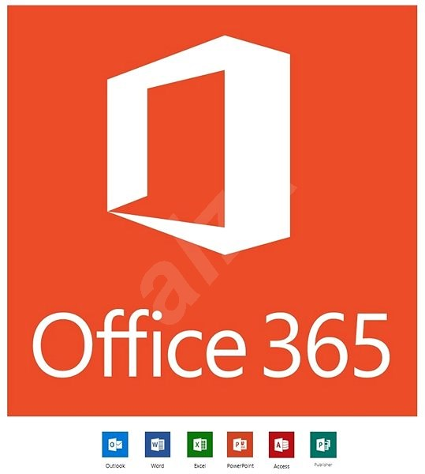

Office 365Office 365 Pro Plus is just like any other Office version and it contains all the basic features that you will find in other Office versions. It is not a web based version and works locally on your computer. It means you don’t need to be connected to the internet for using its features. Though it has many similarities to the other Office versions but still their are differences like Office 365 Pro Plus need to renew license every month and if you will not renew its license it will go into the reduced functionality mode in which you can open and view your old files with less features. Office 2013 Professional Plus is another great alternative.Even though Office 365 Pro Plus does not need any internet connection for its use but still you need to connect to the internet after every month so that your licensing status can be checked. With a single license you can install your Office 365 Pro Plus onto 5 different computers. The installation process of Office 365 Pro Plus is quick as it uses click to run technology. Hence on a matter of no time you are ready to use your product. Office 2010 is great choice as well for light weight. Features of Office 365Below are some noticeable features which you’ll experience after Office 365 Pro Plus free download.
Office 365 Pro Plus Technical Setup DetailsSystem Requirements For Office 365BBefore you start Office 365 Pro Plus free download, make sure your PC meets minimum system requirements. Office 365 Pro Plus Free DownloadClick on below button to start Office 365 Pro Plus Free Download. This is complete offline installer and standalone setup for Office 365 Pro Plus. This would be compatible with both 32 bit and 64 bit windows. |